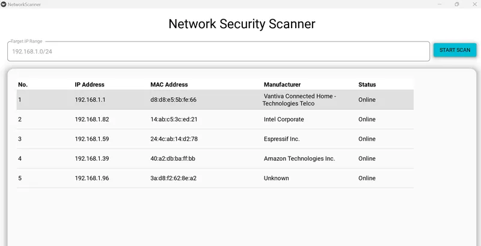

Network Security Scanner
Network Security Scanner 🛡️


A lightweight, cross-platform (Windows-focused) network auditing tool built with Python, KivyMD, and Scapy. This application performs ARP broadcasting to discover active devices on a local network and enriches the data with manufacturer information via MAC OUI lookup.
📸 Screenshot

🚀 Features
Real-time Network Scanning: Discover IP and MAC addresses within a specified CIDR range (e.g., /24).
Manufacturer Identification: Automatically identifies device vendors (Apple, Samsung, etc.) using the MacVendors API.
Multi-threaded Execution: Scans run in a background thread to keep the UI responsive and "jank-free."
Modern UI: Clean Material Design interface with pagination and sorting.
Production Logging: Integrated with Loguru for detailed, color-coded terminal output and persistent log files.
📁 Project Structure
network_security_scanner/
├── venv/
├── main.py # Primary application logic and UI
├── screenshots # Screenshots
├── requirements.txt # Project dependencies
├── .gitignore # Files to exclude from Git
├── scanner_debug.log # Auto-generated log file
└── README.md
🛠️ How to Run
Prerequisites Python 3.10+
Npcap: Required for Scapy to send/receive raw packets on Windows.
Administrator Privileges: You must run your terminal/IDE as Administrator to allow Scapy to access the network interface.
⚒️ Installation
Clone the repo:
git clone https://github.com/reory/network-security-scanner.git
cd network-security-scanner
Create and activate virtual environment:
python -m venv venv
.\venv\Scripts\activate
Install dependencies:
pip install -r requirements.txt
Run the app:
python main.py
🚧 Challenges Faced & Lessons Learned
KivyMD Versioning: Navigating the transition between KivyMD 1.2.0 (Stable) and 2.0.0 (Dev). I opted for 1.2.0 to ensure MDDataTable stability.
Windows Interface Routing: Overcame issues where Scapy would target disconnected adapters by implementing conf.route to auto-detect the active Gateway interface.
UI Threading: Learned to use Kivy's Clock.schedule_once to safely update the UI from a background scanning thread, preventing application freezes.
🗺️ Roadmap Features
[ ] Port Scanner: Add the ability to scan specific devices for open ports (80, 443, 22, etc.).
[ ] Export Functionality: Export scan results to CSV or PDF reports.
[ ] Custom Themes: Toggle between Light and Dark mode within the UI.
[ ] Local OUI Database: Move manufacturer lookup offline for faster, air-gapped scanning.
📝 Notes
Permissions: If the app hangs on "Scanning," ensure you are running as Administrator.
API Limits: Important The vendor lookup uses a free API which may rate-limit requests if scanning very large networks.
Happy coding, reach out if you want to contribute.🐍
Built by Roy Peters 😁 Contact details